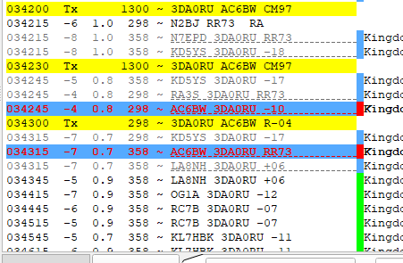

[Date Prev][Date Next][Thread Prev][Thread Next][Date Index][Thread Index]
Re: [NCDXC Chat] 3DA0RU FT8 F/H Confusion
Hi, Steve,When I worked him, I was moved down to 298 Hz, as in F/H mode.I had F/H mode enabled, and I was using JTDX.JTDX does not care what cycle you Tx on in F/H mode, odd or even. You can set either. I just double clicked on the DX call, and let the program choose the cycle.So I think you are right that they are able to handle both simplex and F/H callers.
73,RogerAC6BW
On Friday, October 8, 2021, 08:45:54 PM PDT, Steve Dyer via Chat <chat@ncdxc.org> wrote:
The 3DA0RU DXpedition, Kingdom of Eswatini, was doing a confusing (to me) thing today on FT8.
First, it looked like they were using Fox/Hound mode of WSJT-x, but they were transmitting on the odd cycle (15 and 45). F/H mode specifies the Fox must be even/1st (00 and 30 cycles).
Second I noticed that stations they worked were not being moved into the < 1000 Hz window to transmit when called.
After unsuccessfully trying to force WSJT-x in F/H mode to transmit Hound messages on the even/1st cycle I contacted fellow DXpeditioner N7QT. Rob told me they are using the MSHV program in multi-stream mode without F/H. MSHV takes advantage of the F/H messaging but does *not* require WSJT-X to be put into F/H mode.
Supposedly MSHV will work transparently with either Hound callers or normal "simplex" mode callers at the same time, but I suspect the expedition leaders decided to use odd cycle to force people to not use WSJT-x F/H. That way they could multi-stream without forcing a mode change on the callers part. The net effect is initial confusion, but this may be a sensible way going forward. This would avoid some of the annoying bugs in WSJT-X that Fox mode on the expedition side that have never been fixed. It also reminded me that WSJT-x is not FT8, but an implementation of the FT8 protocol.
I hope this saves you some confusion when trying to work 3DA0RU.
My 30m QSO:
As you can see their response looks like F/H. It's not.
If you are interested in MSHV: http://lz2hv.org/mshv
73 es gud DX.
Steve
W1SRD
_______________________________________________
Chat mailing list
Chat@ncdxc.org
http://mail.ncdxc.org/mailman/listinfo/chat_ncdxc.org


{kind=link}